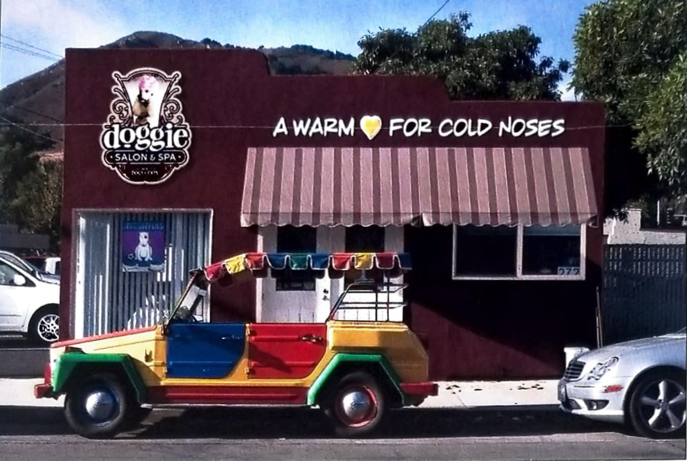

This is a composite rendering created in Adobe Photoshop prior to building the signs. Working in this way the client can see what we intend to do with the exterior of the building. The rendering shows the new color of the building, the awning and the complete sign package. At the time of this writing none of the above are actually on the building.

To the left is the photo captured and as you can see the dog is not looking pampered or happy. On the right is the image that was sent to the Gerber Edge... I kept the image soft by applying selective sharpening to the eyes, nose and collar.

The bulk of this project was cut from 1" 10-lb. SignFoam3. The background would later be laminated to 1/2" marine plywood.

The router work was cut to accept inlayed parts trapping the three basic colors... After painting the tan we could come back with a roller and foam brushes and apply the Tuscan red color on all raised surfaces.

All of the borders and filigree were cut from 1/2" Sintra and then rounded over on the router. They were later finished with the pink acrylic paint.